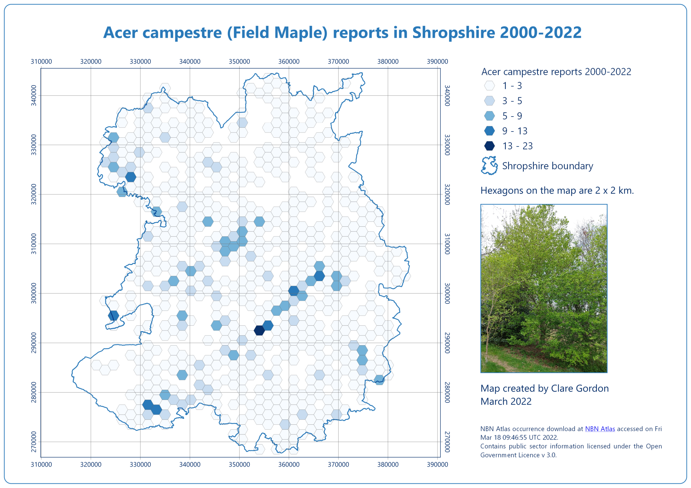

Hexagons
For more information on using hexagons I want to read this article on Hexagons for location intelligence.
Species diversity reports from Shropshire

Data
- Data from NBN Atlas - downloaded data for flowering plants in Shropshire, Telford and The Wrekin then extracted particular species.
- Photo is a field maple in a hedgerow at The Wintles, Bishop’s Castle, April 2022.
NBN Atlas occurrence download at NBN Atlas accessed on Thu Mar 17 14:57:02 UTC 2022.
What did I learn?
- Investigating a new data source - NBN Atlas.
- Creating a virtual layer to run SQL queries.
- Creating a hexagon grid and adding the number of points to each hexagon.
- Creating custom legend patches - e.g. the outline of Shropshire, and the hexagons.
What do I want to change?
- Remove the photo!
- Update the legend patch for Shropshire as it doesn’t completely match the map!
Process
- Once have data downloaded and loaded in QGIS, use
Extract by expression to extract point data for a particular species, e.g. Acer Campestre, Field Maple.
"Scientific name" = 'Acer campestre'
- Create a grid of hexagons -
Vector > Research tools > Create grid, setting the Grid type to Hexagon.. I found for Shropshire that a 2 km grid worked best.
- Use
Count points in polygon to count number of points in each hexagon. Output should be a hexagon layer.
- Style with graduated colours. Classes will vary depending on max and min number of occurrences but set minimum value to
1.
SQL queries
Finding out numbers of each category of plant
SELECT fid, "Scientific name", "Common name", COUNT(*)
FROM "ShropshireFloweringPlants2000-2021"
GROUP BY "Scientific name"
- Layout constructed in QGIS and exported as image.